Debates about who pays taxes in the United States frequently conflate different tax types, different income measures, and different definitions of burden. The top 1% pays 40% of federal income taxes — a fact often cited to argue the system is already sufficiently progressive. But income taxes are only one piece. Payroll taxes — which fund Social Security and Medicare — are structurally regressive, falling harder on middle earners than on the wealthy. Excise taxes on gasoline and tobacco take a larger share of a low-income household's budget than a high-income one. Corporate taxes flow mostly to capital owners concentrated at the top. This analysis brings all of those threads together: income taxes, payroll taxes, corporate tax incidence, and excise taxes, measuring the effective burden each imposes on households at every income level. The system, when viewed in full, is progressive — but less so than income tax data alone suggests. It also traces how the federal revenue mix has shifted over 70 years, compares U.S. tax levels to other wealthy nations, and shows what redistribution through the tax-and-transfer system actually accomplishes for households at each income level.
The federal income tax is the largest single source of federal revenue, generating $2.3 trillion in FY2022 — more than half of all federal receipts. It is also the most progressive component of the tax system: statutory marginal rates rise from 10% to 37% as income climbs, and the effective rate paid by the top 1% is seven times higher than the rate paid by households in the bottom half.
The figures below draw on IRS Statistics of Income (SOI) data for tax year 2022. The SOI is the most comprehensive administrative dataset available on individual income tax filing, covering 153 million returns and reporting income, deductions, and tax liability by AGI bracket.
The top 1% pays a larger share of income taxes (40.4%) than their share of income (22.4%). The bottom 50% pays a smaller share of taxes (2.3%) than their share of income (14.8%). The income tax system redistributes the tax burden upward relative to income.
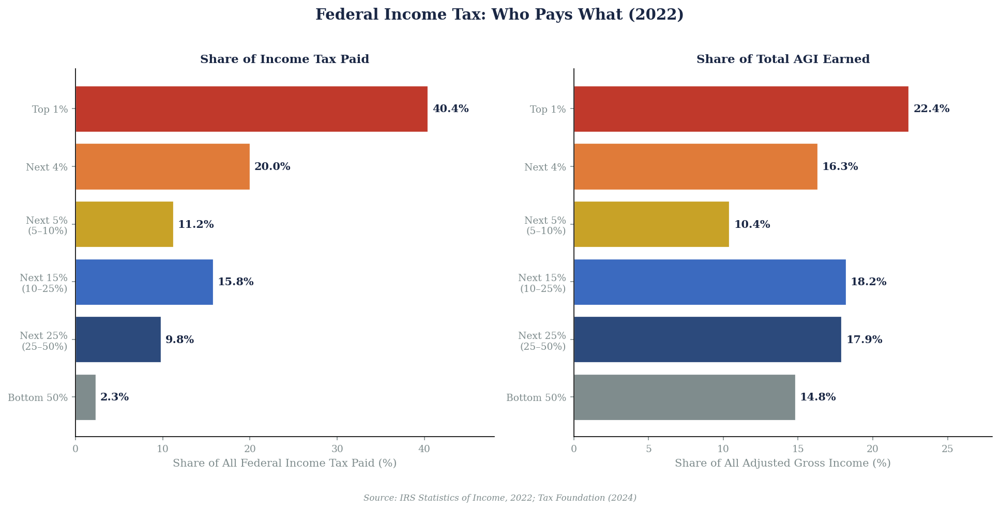
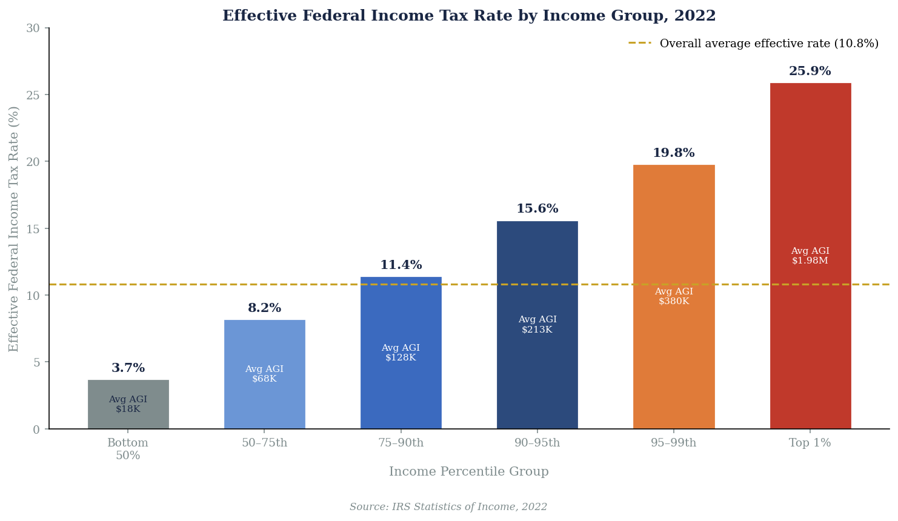
A key distinction in understanding progressive taxation is the gap between statutory marginal rates and effective rates actually paid. A household in the 37% bracket does not pay 37% of all income in federal taxes — it pays 37% only on dollars above the top threshold. Deductions, credits, and lower rates on capital gains compress effective rates well below their statutory counterparts.
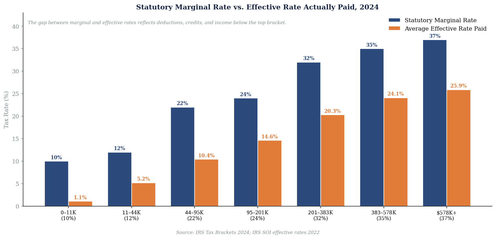
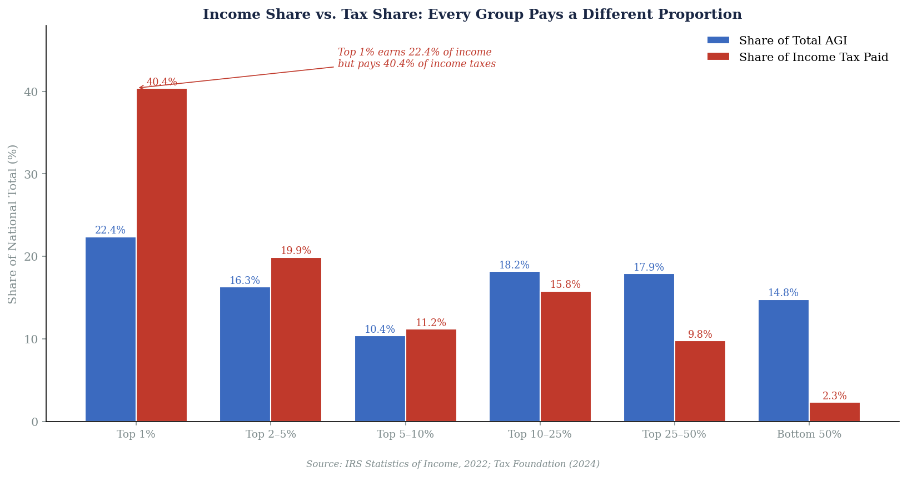
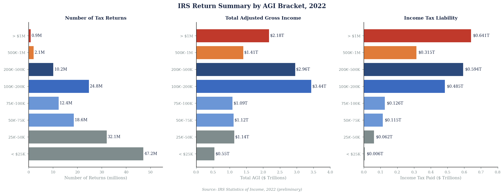
The top marginal rate has varied enormously over the past century — from 7% at the income tax's founding in 1913, to 94% during World War II, down to 28% after the Tax Reform Act of 1986, and back to 37% today. Understanding that history matters for interpreting current rate debates.
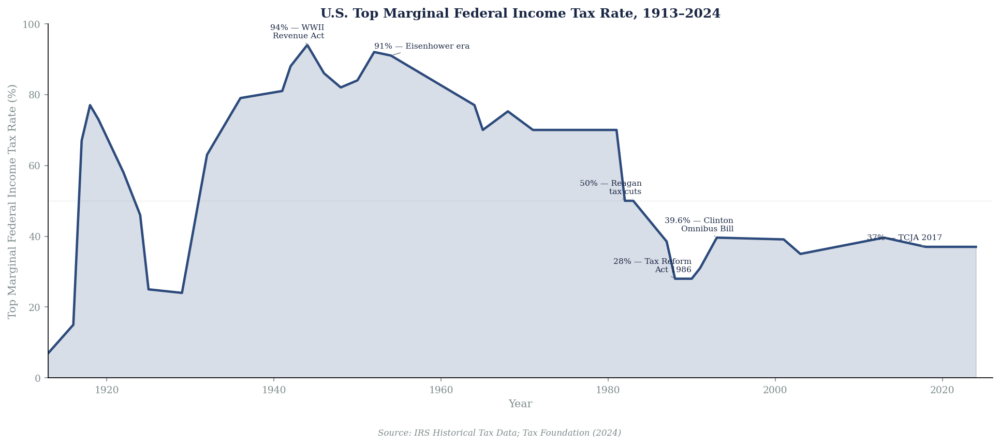
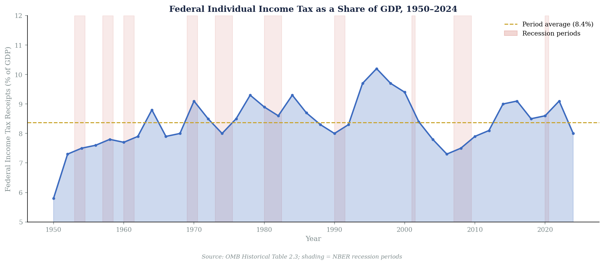
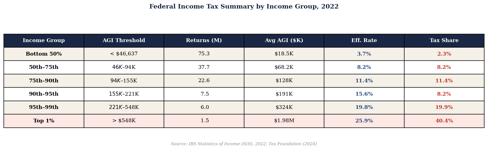
| Income Group | AGI Range | Share of Returns | Share of AGI | Share of Tax | Effective Rate |
|---|---|---|---|---|---|
| Top 1% | $548K+ | 1% | 22.4% | 40.4% | 25.9% |
| Next 4% | $183K–$548K | 4% | 16.3% | 20.0% | 19.8% |
| Next 5% | $138K–$183K | 5% | 10.4% | 11.2% | 15.6% |
| Next 15% | $79K–$138K | 15% | 18.2% | 15.8% | 11.4% |
| Next 25% | $34K–$79K | 25% | 17.9% | 9.8% | 8.2% |
| Bottom 50% | Under $34K | 50% | 14.8% | 2.3% | 3.7% |
Income tax data alone gives a misleading picture of the overall distribution of tax burdens. The federal government collects revenue through four main channels: the individual income tax (54% of receipts in FY2022), payroll taxes (31%), the corporate income tax (10%), and excise and other taxes (5%). Each has a distinct distributional profile.
Payroll taxes fund Social Security and Medicare. The combined employee-employer rate is 15.3%, but because the Social Security portion applies only to wages below $160,200 (in 2022) and because investment income — concentrated heavily at upper income levels — is not subject to payroll taxes at all, the effective payroll rate actually falls as income rises above the middle quintile. Payroll taxes are structurally regressive.
Excise taxes on gasoline, tobacco, and alcohol take a larger bite out of low-income budgets. Lower-income households spend a higher fraction of their income on goods subject to excise taxation, making these taxes regressive when measured as a share of income.
Corporate income taxes require an incidence assumption: who ultimately bears the cost of a tax imposed on corporate profits? The CBO allocates 75% to capital owners (progressive) and 25% to labor through reduced wages (more broadly distributed). Because capital ownership is heavily concentrated at the top of the income distribution, the corporate tax is the most progressive federal tax per dollar raised.
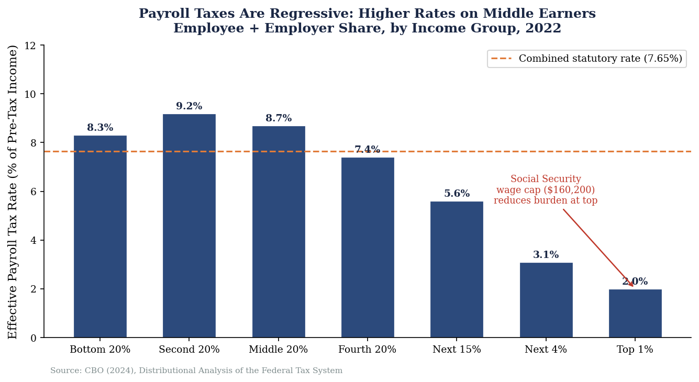
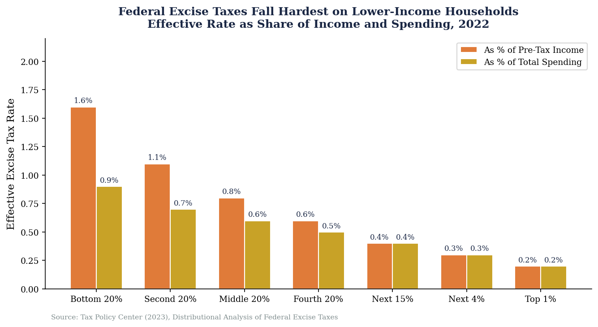
Payroll taxes impose a higher effective rate on middle-income households (9.2%) than on the top 1% (2.0%). Excise taxes consume 1.6% of bottom-quintile income but only 0.2% of top-1% income. Both work against the progressivity established by the income tax.
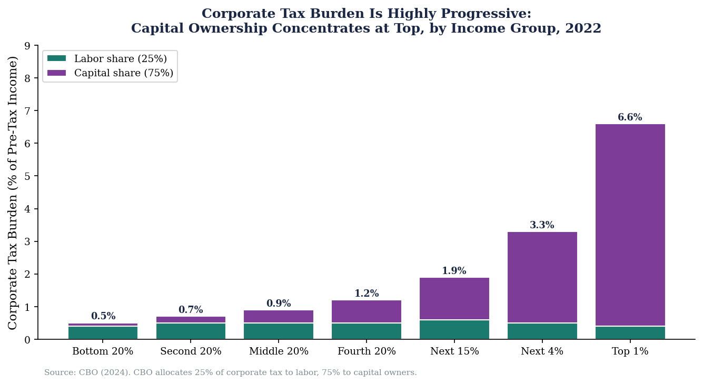
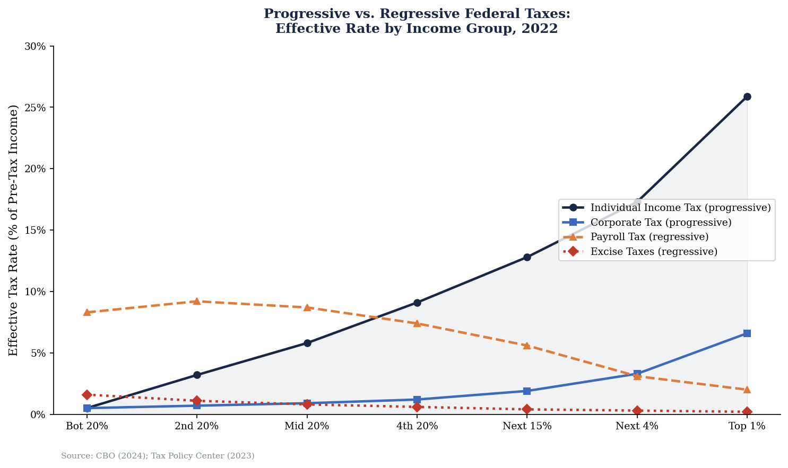
The revenue mix tells a longer story. In 1950, corporate income taxes provided more than a quarter of all federal revenue. By 2022, that share had fallen to 10%. Payroll taxes went the other direction: from under 7% in 1950 to over 30% today. This shift matters for distribution: the revenue base has moved toward taxes that fall more heavily on workers and away from taxes on capital.
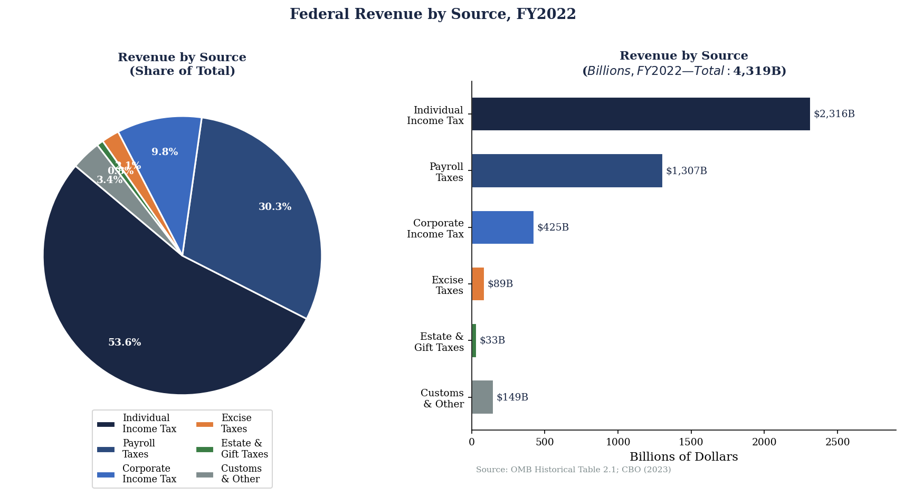
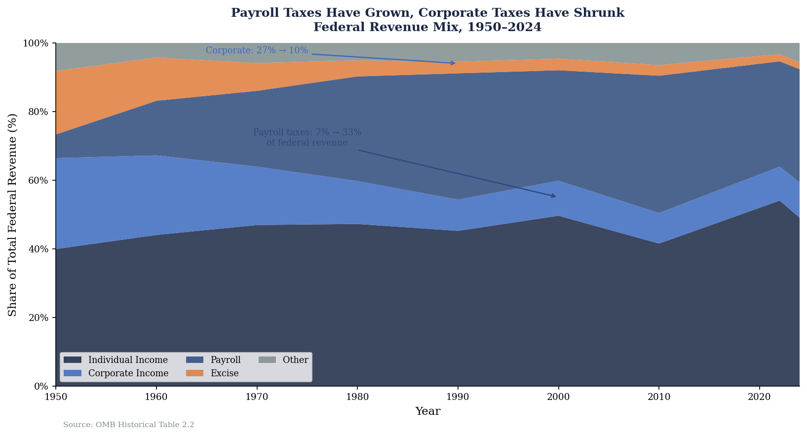
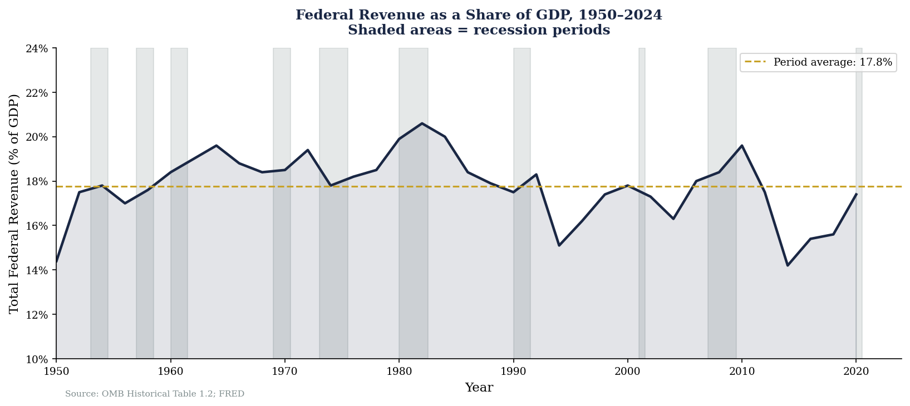
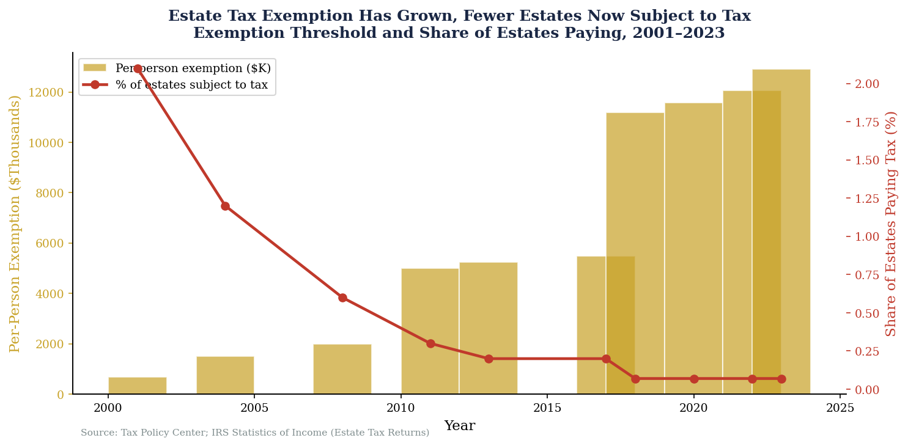
| Income Group | Income Tax | Payroll Tax | Corporate | Excise | Progressivity |
|---|---|---|---|---|---|
| Bottom 20% | 0.5% | 8.3% | 0.5% | 1.6% | Mixed |
| Second 20% | 3.2% | 9.2% | 0.7% | 1.1% | Mixed |
| Middle 20% | 5.8% | 8.7% | 0.9% | 0.8% | Moderate |
| Fourth 20% | 9.1% | 7.4% | 1.2% | 0.6% | Moderate |
| Next 15% | 12.8% | 5.6% | 1.9% | 0.4% | Progressive |
| Next 4% | 17.3% | 3.1% | 3.3% | 0.3% | Progressive |
| Top 1% | 25.9% | 2.0% | 6.6% | 0.2% | Progressive |
Adding all four major federal tax components gives the CBO's comprehensive measure of the all-federal effective tax rate. The result is a system that remains progressive in its overall structure: the bottom quintile faces a combined rate of around 11%, while the top 1% faces a combined rate of nearly 35%. But the progression is slower than income tax data alone implies, because payroll and excise taxes compress the gap between middle and lower earners.
The stacked figure below breaks down each group's combined burden by tax component, making visible how income taxes drive progressivity at the top while payroll taxes create a burden plateau across the middle of the distribution.
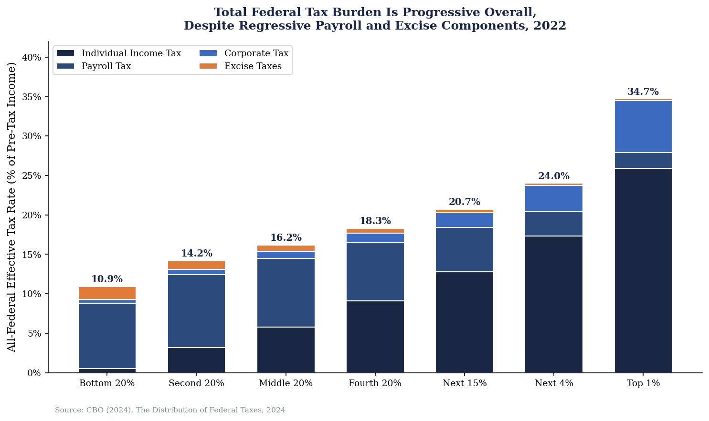
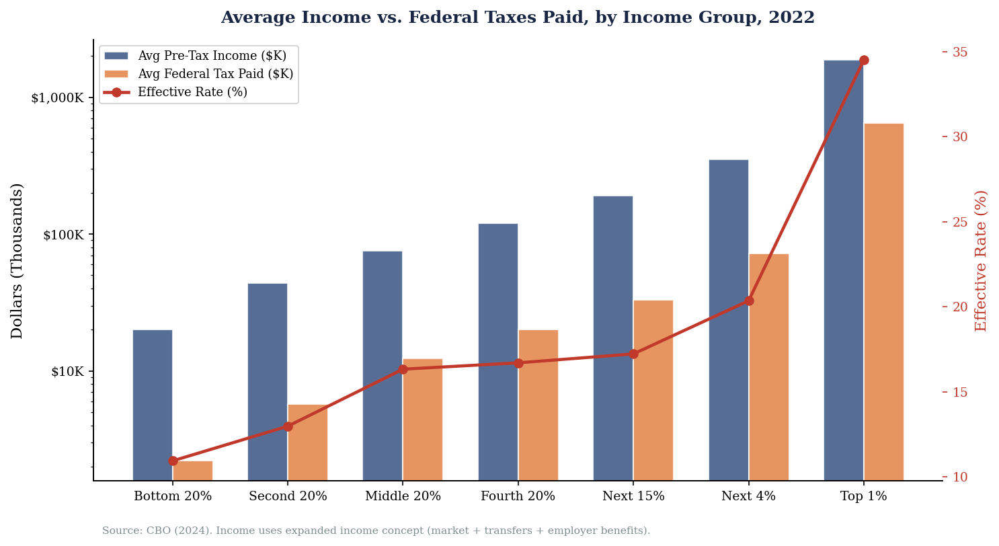
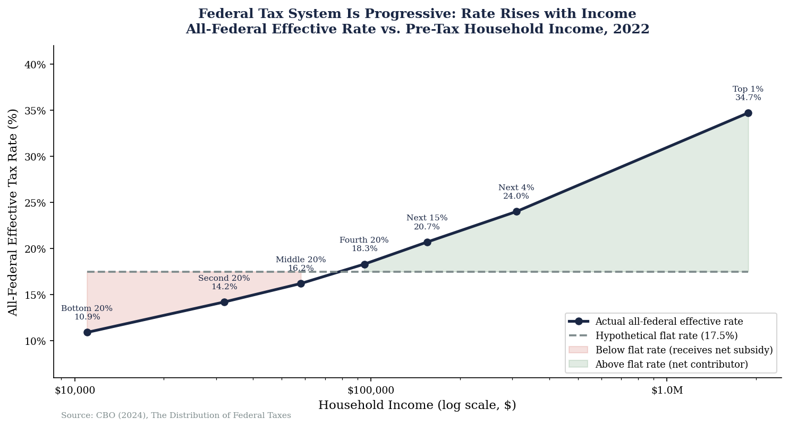
Case studies give the abstract rate comparisons human scale. The five representative households below span the income distribution from the bottom quintile ($28,000) to the top 5% ($500,000). They illustrate how the EITC can reduce a low-income household's income tax below zero; how payroll taxes dominate middle-income bills; and how corporate tax allocation and investment income taxation shape the top-income picture.
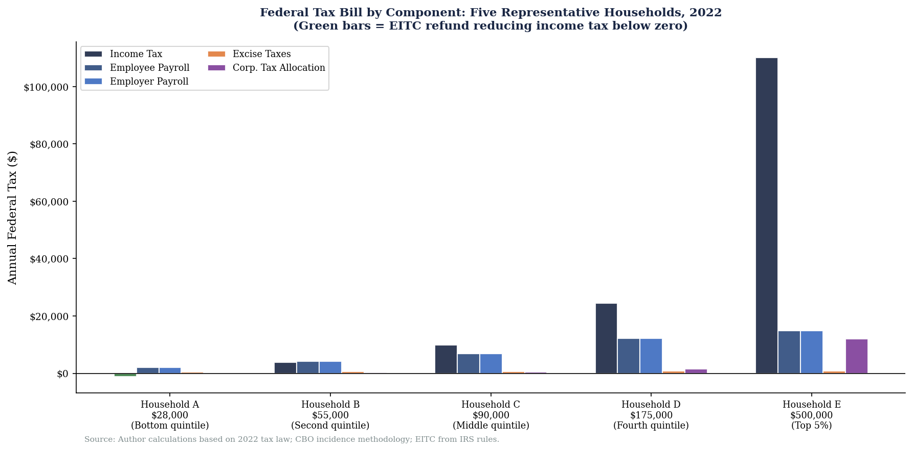
| Household | Income | Income Tax | Payroll (Emp.) | Payroll (Empr.) | Excise | Corp. Alloc. | Total Rate |
|---|---|---|---|---|---|---|---|
| A — Bottom quintile | $28,000 | −$1,200 | $2,142 | $2,142 | $450 | $50 | 12.6% |
| B — Second quintile | $55,000 | $3,800 | $4,207 | $4,207 | $600 | $200 | 23.7% |
| C — Middle quintile | $90,000 | $9,800 | $6,885 | $6,885 | $700 | $500 | 27.5% |
| D — Fourth quintile | $175,000 | $24,500 | $12,240 | $12,240 | $750 | $1,500 | 29.3% |
| E — Top 5% | $500,000 | $110,000 | $14,800 | $14,800 | $900 | $12,000 | 30.5% |
Taxes are only one side of the government's distributional ledger. The other side is transfers: Social Security payments, Medicare and Medicaid benefits, SNAP, the EITC, and dozens of other programs that deliver cash or in-kind benefits largely (though not exclusively) to lower-income households. To understand the full redistributive impact of government, both sides must be counted together.
The CBO's comprehensive income measure makes this possible. By comparing a household's market income (wages, capital gains, business income) to their income after taxes and transfers, the CBO can show how much the fiscal system shifts resources across the distribution. The results are substantial: lower-income quintiles receive far more in transfers than they pay in taxes, while upper-income quintiles are substantial net contributors.
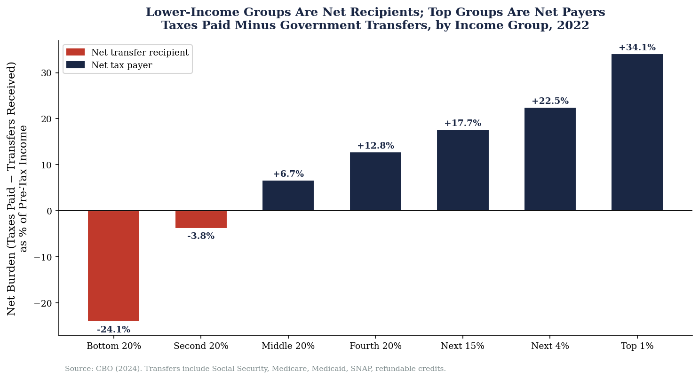
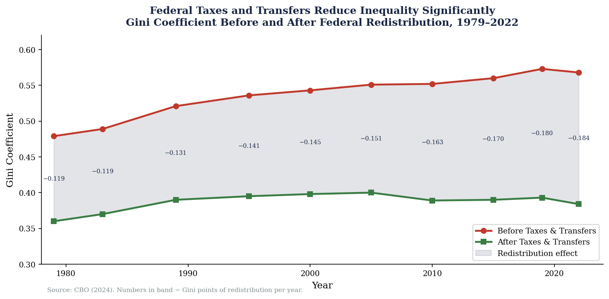
The bottom quintile receives transfers worth 35% of its pre-tax income while paying combined federal taxes of about 11% — a net transfer of roughly 24 percentage points. The top 1% pays nearly 35% of pre-tax income in taxes while receiving transfers worth under 1% — a net contribution of over 34 points.
The Gini coefficient captures this redistribution in a single number. In 2022, pre-tax market income had a Gini of 0.568 — a level reflecting widening inequality in wages and capital returns over the past four decades. After federal taxes and transfers, the Gini fell to approximately 0.384. That 0.184-point reduction represents the equalizing work of the entire federal fiscal system. The reduction has grown modestly since the early 1980s, though market income inequality has grown faster than redistribution can offset.
A final frame of reference is comparative. The U.S. collects total taxes — federal, state, and local combined — equal to about 27.7% of GDP. That places it near the bottom of the OECD distribution, well below the 34% OECD average and far below high-tax nations like Denmark (46.9%) or France (46.1%). This is despite having a relatively high top marginal income tax rate by international standards at the federal level.
The gap reflects structural differences: the U.S. lacks a national value-added tax, imposes payroll taxes at a lower rate than most European systems, and relies more heavily on employer-provided benefits (health insurance, retirement) funded outside the tax system entirely. Whether this is a feature or a bug is a normative question. The data simply establish that by total tax burden, the U.S. is not a high-tax country relative to its peers.
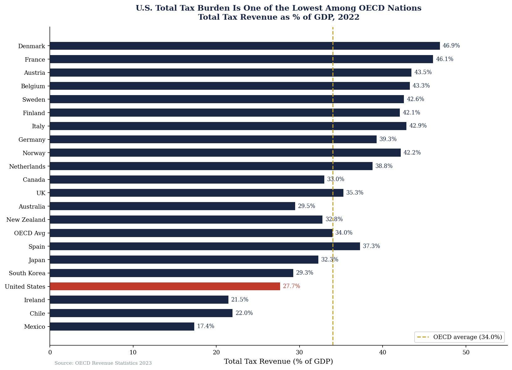
At 27.7% of GDP, total U.S. tax revenue ranks 34th out of 38 OECD nations — below every major European economy and below the OECD average of 34%. The U.S. collects relatively less from consumption taxes and payroll contributions than most peers, relying more on income and corporate taxes for its share of revenue.
Income Tax (Section I). Data from IRS Statistics of Income (SOI) 2022, Table 1 — Individual Income Tax Returns with Positive AGI. Effective rates calculated as total income tax after credits divided by adjusted gross income. AGI bracket categories follow IRS SOI conventions. Top marginal rate history assembled from IRS and Tax Foundation historical records.
Payroll and Excise Taxes (Section II). Effective rates by income quintile from CBO (2024), The Distribution of Federal Taxes. CBO uses a comprehensive income measure (market income + government transfers + imputed employer contributions) as the denominator. Payroll rates include both employee and employer shares, treating the employer contribution as an economic burden on labor. Excise tax incidence is allocated based on consumption patterns by income group.
Corporate Tax Incidence. CBO allocates 75% of the corporate income tax to capital owners in proportion to their capital income, and 25% to workers in proportion to their labor income. This is the standard approach used in distributional analysis. Some analysts use a 100% capital allocation; the distributional effect of the corporate tax is progressive under any reasonable assumption.
Combined Burden and Redistribution (Sections III–IV). All-federal effective rates sum individual income, payroll, corporate, and excise components from CBO (2024). Net redistribution figures compare taxes paid to transfers received (Social Security, Medicare, Medicaid, SNAP, housing assistance, and refundable credits) as percentages of pre-tax comprehensive income. Gini coefficients from CBO distributional analysis, 1979–2022.
International Comparison (Section V). Total tax revenue as % of GDP from OECD Revenue Statistics 2023, covering all levels of government (central + subnational + social security funds). 2022 data used for consistency with domestic analysis year.
Household Case Studies. Estimates based on 2022 tax law applied to hypothetical single-earner households. Income tax calculated using 2022 brackets and standard deduction ($12,950). EITC applied for household A. Payroll taxes at statutory rates (6.2% SS + 1.45% Medicare for both employee and employer). Corporate tax allocation based on CBO quintile methodology applied to household income level. Excise taxes estimated from average spending patterns by income quintile.